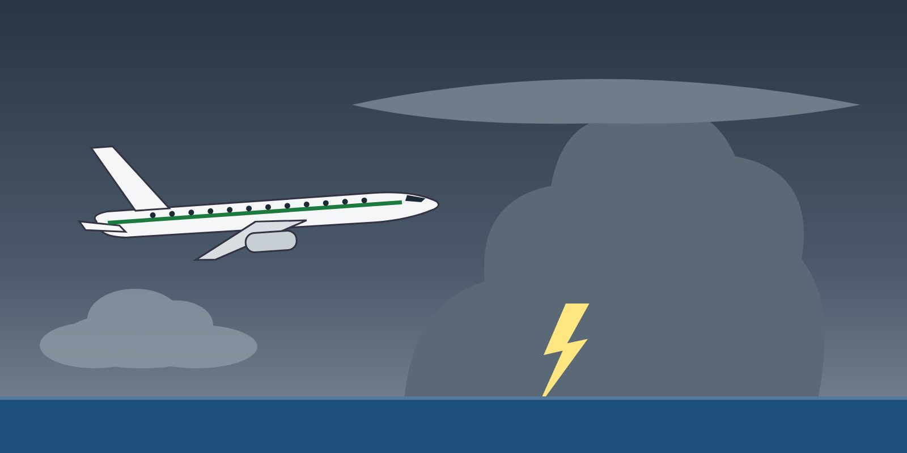

Module 1 · Introduction
Lesson 03: Causes and Contributing Factors of Upsets
Lesson narration
Checking for narration…
Learning objectives
- Describe the three main families of upset causes: environmental, systems-induced and pilot-induced.
- Recognise how several factors usually combine in an upset.
- Relate each family of causes to prevention strategies.

Three families of causes
| Family | Examples |
|---|---|
| Environmentally induced | Turbulence and clear-air turbulence; mountain waves; windshear and microbursts; wake turbulence; thunderstorms; airframe icing; temperature changes at high altitude |
| Systems-induced | Autopilot or autothrust behaviour and disconnects; flight control malfunctions or degraded control laws; erroneous air data (unreliable airspeed); instrument failures; asymmetric thrust or engine failure |
| Pilot-induced | Inattention and poor monitoring; distraction; inappropriate control inputs; mode confusion; poor energy management; spatial disorientation; startle; fatigue; inadequate manual flying skill |
Upsets are rarely caused by one factor
Accident investigations show a typical pattern: an initial trigger — often environmental or technical — followed by human responses that do not contain it, or that make it worse. For example:
- Ice crystals block the pitot probes (environmental) → the autopilot disconnects and air data is unreliable (systems) → the pilot makes sustained nose-up inputs under stress (pilot-induced) → the aircraft stalls.
- A faulty sensor causes the autothrust to reduce thrust (systems) → the crew does not notice the speed decay (monitoring) → the stall warning surprises them at low altitude (startle).
Prevention strategies for each family
- Environmental: knowledge of the threats, weather avoidance, respecting wake separation, briefing and planning, and using the right speeds and altitudes with adequate margins (Lesson 12).
- Systems: understanding the automation and its modes, monitoring the flight mode annunciations, knowing the memory items for unreliable airspeed and flight control malfunctions (Lessons 13 and 18).
- Pilot: disciplined monitoring, manual handling practice, energy awareness, managing startle, fatigue awareness and CRM (Lessons 14–16).
Threat and error management
Treat every cause as a threat to be anticipated and briefed. Most upset-related accidents could have been stopped at the threat or error stage — long before an upset recovery was needed.
Key takeaways
- Causes are environmental, systems-induced or pilot-induced — usually in combination.
- A technical or weather trigger often becomes an upset through human responses.
- Each family of causes has its own prevention strategy.
Knowledge check
Which is an example of a systems-induced upset cause?